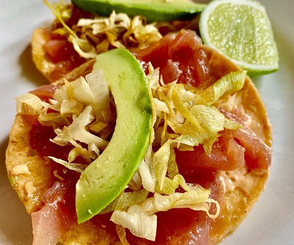
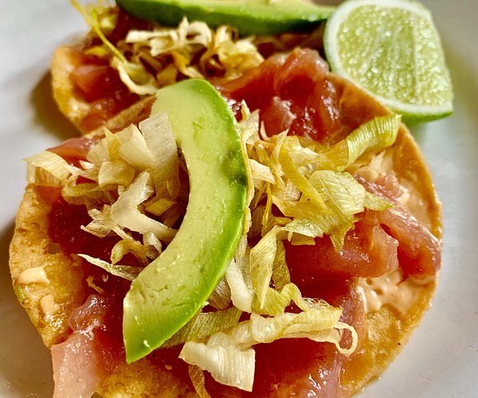
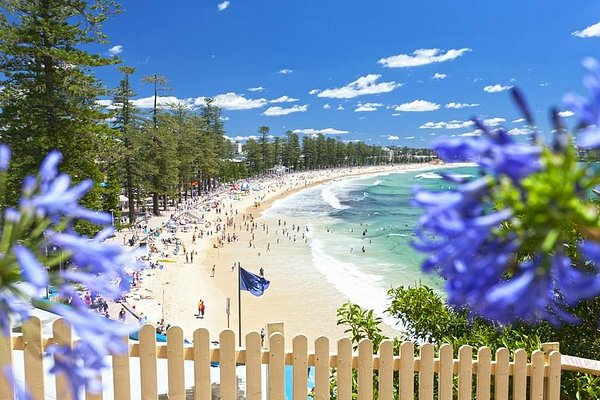
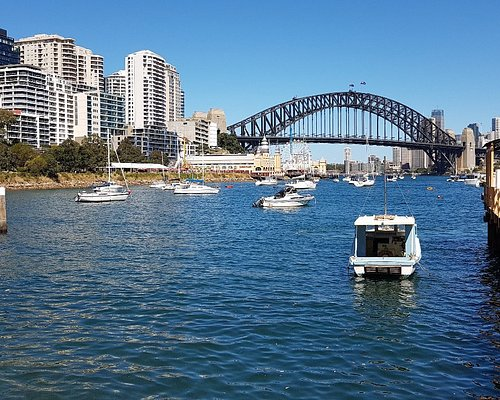
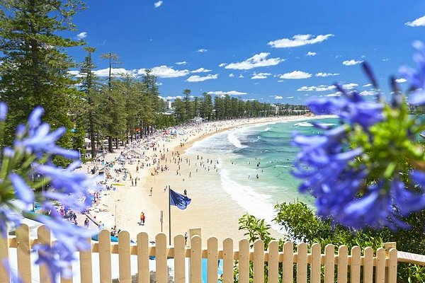
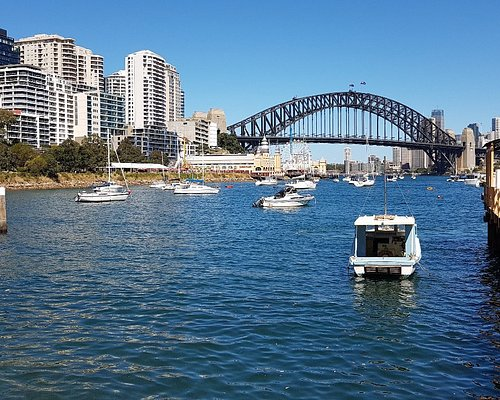

Discover Mexico City
The capital of Mexico, this is the most populated city in the country and the most populated urban area in North America. One fact is how this capital city is located on top of the mountain. In fact, the total elevation of this city is 6880 ft above sea level.
Mexico City provides a taste of history, culture, and modern vibrancy. From the history of the Teotihuacan pyramids to the inspiring streets lined with tasty street food, this city offers a unique experience to anyone. Get lost in the colorful Coyoacán neighborhood, take in the views from Torre Latinoamericana, or take a calm walk through the vast green expanse of Chapultepec Park.
Explore world-class museums, enjoy exceptional dining, or dive into the city's lively nightlife, where there's always something new to discover. Whether you're a history lover, an art enthusiast, a foodie, or someone looking to explore anything unique, Mexico City has something.
The city is as rich in heritage as it is in adventure - from Lucha Libre wrestling to relaxing boat rides in Xochimilco's canals, Mexico City will offer you magic. With its vibrant neighborhoods and easy access, it's time to list Mexico City in your bucket list.
Rich History and Culture
Explore ancient ruins like Teotihuacan and the Templo Mayor, where Aztec history comes alive. Wander through UNESCO World Heritage Sites such as the Historic Center and Xochimilco's canals. Explore and reflect Mexico's vibrant art scene at the Frida Kahlo Museum and the National Museum of Anthropology.
World-Class Cuisine
Taste the best of street food, such as tamales, churros, sopes, tostadas, and much more. No trip to Mexico is complete by eating iconic tacos, which can be found anywhere in the city, each prepared with different styles. Take a break from street food by dining fine in quality restaurants like Pujol and Quintonil. Experience authentic, traditional Mexican flavors in local cantinas and family-owned restaurants.
Breathtaking Architecture
Take a look at colonial buildings and modern skyscrapers, including the famous Palacio de Bellas Artes and the Torre Latinoamericana for amazing city views. Explore the grandeur of Chapultepec Castle, overlooking the sprawling Chapultepec Park. For outdoor enthusiasts, enjoy hiking and breathtaking views of the Popocatépetl and Iztaccihuatl volcanoes just outside the city.
Lively Events and Festivals
Celebrate the holiday of Dia de los Muertos (Day of the Dead), a celebration of life and culture with vibrant parades and altars. Enjoy Lucha Libre wrestling matches for a taste of Mexico's national sports and entertainment scene. Attend live music events like the Vive Latino Festival, showcasing top music acts from Latin musicians.
Start your adventure today and uncover the heart of Mexico City!
Plan your Trip!
 


 


